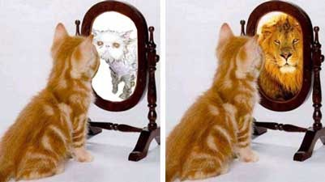
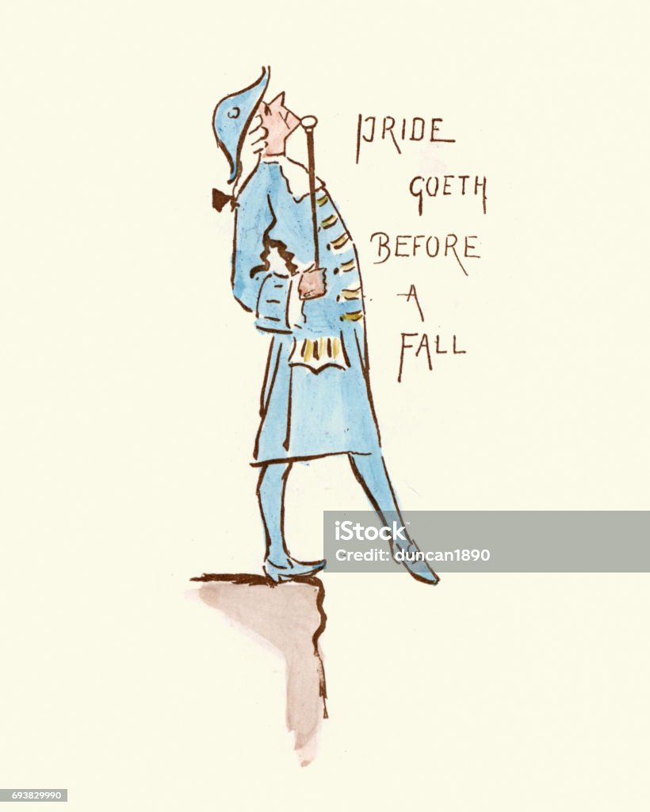

Abordaremos conhecimentos que muis não entendem, pois o corrompido sempre acha que é o "feito racional", mas aos olhos do sábio, o corrompido é um tolo perdido. Procure ser fora do comum comigo!
Afinal...vale a pena se importar com nossa aparência? Quer dizer, qual a finalidade de tudo sendo que a última parada é a morte. Andar na moda, é sinônimo de quue voce não tem um pilar de amor próprio, voce se incomoda tanto em ter uma reoupa cara que se esquece de sua felicidade. Ou seja, assim que você se torna um rato da moda, você tende a ter pesadelos com "aquela roupa cara", já que disseram a ti que caso não usar uma do mesmo nivel, você é um feio, um desageitado. No fim, voce fica frustrado e ansiótico...deixando opiniões terceiras te consumir.
Solução simples para este defeito, é usar o que voce sente mais confortável em seu corpo, não precisa sentir medo em usar calças coladas ou tênis fora de uma linha...use e faça o que te faz ser você.
Muitas pessoas acham que orgulho é apenas um só, na verdade, andando por esses mundos você percebe que não, vamos ver abaixo suas diferenças:
O Orgulho que poucos reconhece, vamos chama-lo de orgulho próprio. Isso é sentir orgulho de suas conquistas e ações, você nunca precisou ou precisara passar por cima de alguem, a humildade se mantem sempre.
Ex: "Eu estou em primeiro lugar, é o resultado do meu treino, eu mereço essa conquista!"
Este é o orgulho que muitos conhecem, que retrata a maldade e a inveja. Todos os seres já fora usuarios do tal, mas, deixar este orgulho de lado é dificil, é importante perceber as atitudes que o O.A causa, como a desumildade, arrogancia entre outros, vamos acompanhar um exemplo:
Ex: "Eu estou em primeiro, claro, ninguém se compara á mim, nem precisei me esforçar, eles não merecem essa conquista, alías, não são como eu!"
Isso foi uma pequena parte de meu conhecimento, não seja o comum, não seja um tolo, seja melhor...seja o seu melhor. Obrigado pela atenção e boa jornada!